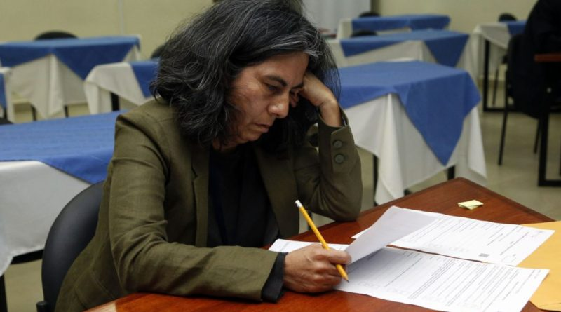

El próximo lunes 14 de diciembre a las 10hs. realizaremos el examen final.
Utilizaremos la modalidad que ya usó el departamento:
El examen es escrito bajo supervisión por videoconferencia. Se deberá ingresar a la reunión, correctamente identificado con su Nombre y Apellido, utilizando un enlace de meet que proporcionaremos por correo institucional.
Se necesitará tener tres o cuatro hojas en blanco para escribir el examen.
Es necesario disponer de cámara web y micrófono activados durante todo el examen. La cámara deberá estar enfocada de tal manera que se observen: la cara y manos del estudiante, y todas las hojas del examen (intentando abarcar una buena parte de la mesa). Como se observa en la siguiente figura:
Nota sobre privacidad: si se desea se puede colocar una manta o tela detras de la silla. No es necesario que la cámara muestre el lugar restante (habitación) del examen.
Las preguntas se darán 10 minutos antes del examen, por correo institucional. El examen comienza cuando tengan las preguntas ya escritas en papel.
Quienes utilicen dispositivo a batería, deberán prever tener conectado el mismo a la red eléctrica.
El dispositivo deberá tener las notificaciones y llamadas silenciadas. Si el ruido ambiente molesta pueden poner auriculares y dejarlos sobre la mesa, o en silencio los parlantes.
Al finalizar el examen deberá sacar fotos de cada hoja y de su DNI. Tanto la letra del examen como la calidad de las fotos deben garantizar la correcta lectura del mismo. Las fotos deberán ser enviadas desde su email institucional a los docentes que supervisan el examen (las direcciones de correo del tribunal estará en el correo del examen).
Una vez que usted haya recibido un email de uno de los miembros del tribunal con la confirmación de recepción, recién ahí podrá abandonar la videoconferencia.
NOTA: quienes no puedan cumplir con estos requisitios, por el motivo que sea, contacte a la cátedra.